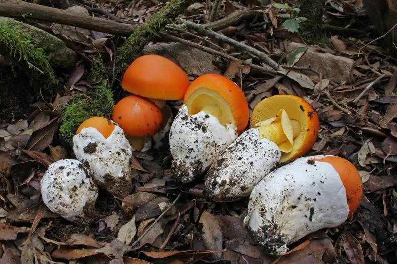

真菌 · 真菌界
橙盖鹅膏 Amanita caesarea

菌盖橙红、菌褶金黄、菌柄带橙黄菌环的鹅膏，是欧洲传统的名贵食用菌，但极易与剧毒鹅膏混淆，切勿自行采食。
- 分类
- 门担子菌门纲伞菌纲目伞菌目科鹅膏科属鹅膏属
- 栖息环境
- 栎树、松树等针阔混交林的地面，夏秋季出菇
- 地理分布
- 欧洲南部和非洲北部，中国有近缘种分布记录
- 保护级别
- 暂无评估（IUCN 未评估，食用需专业鉴定）
物种志
橙盖鹅膏是担子菌门伞菌目的真菌，子实体单生或群生。菌盖呈鲜橙红色至橙黄色，半球形至平展，直径 8–20 cm，表面光滑，边缘有细条纹；菌褶金黄色，离生，密集；菌柄圆柱形，橙黄色，基部有大型白色菌托；菌环橙黄色，膜质，位于菌柄上部；孢子印白色。
橙盖鹅膏多生于栎树、松树等针阔混交林的地面，夏秋季出菇，在欧洲南部和非洲北部较为常见，中国有近缘种分布。它是欧洲传统的名贵食用菌，古罗马人称之为“恺撒蘑菇”，味道鲜美。但鹅膏属中有白毒伞、毒鹅膏等剧毒种类，橙盖鹅膏与它们外形相似，非专业人士极易混淆，因此绝不能自行采食，只能依靠正规渠道购买经过鉴定的产品。
形态与习性
- 菌盖橙红至橙黄色，直径 8–20 cm，边缘有细条纹
- 菌褶金黄色，离生，密集
- 菌柄橙黄色，基部有大型白色菌托
- 菌环橙黄色，膜质
- 孢子印白色
- 食用性欧洲传统食用菌，但需专业鉴定
- 风险与剧毒鹅膏外形相似，切忌自行采食
趣味知识
- 橙盖鹅膏是欧洲传统的名贵食用菌，古罗马人称它为“恺撒蘑菇”。
- 它菌盖橙红、菌褶金黄、菌柄带橙黄菌环，颜色鲜艳。
- 鹅膏属中有多种剧毒种类，橙盖鹅膏极易与它们混淆。
- 非专业人士切勿自行采食橙盖鹅膏，应通过正规渠道购买。